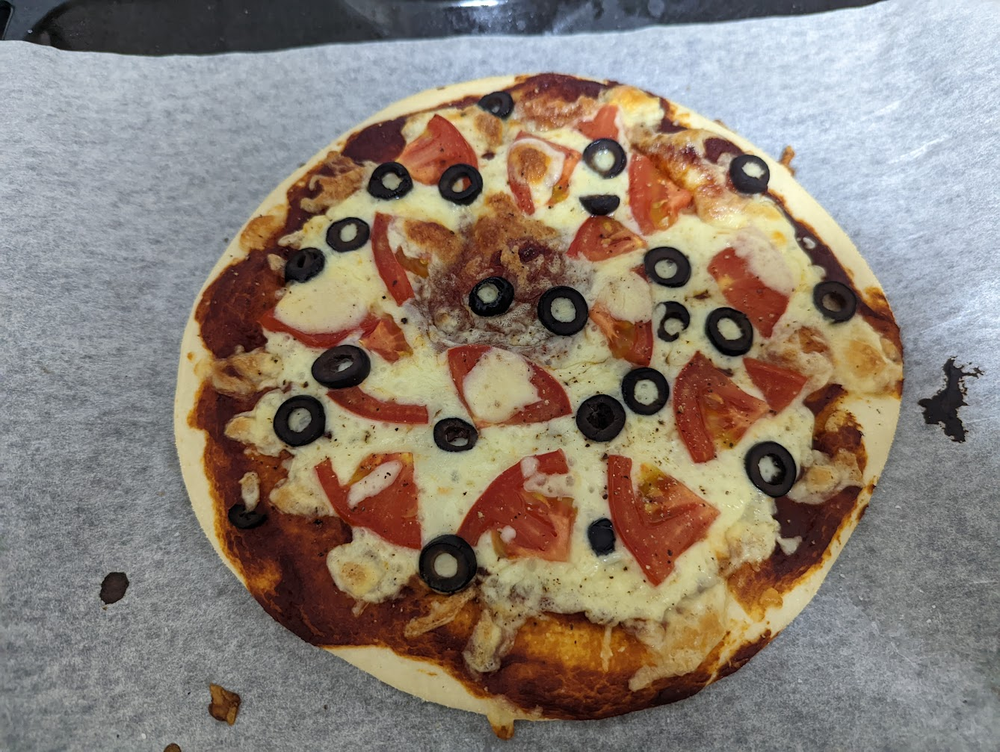

Tomato and Black Olive Pizza

Description
If I'd thought to add capers and anchovies this would've been a Pizza Puttanesca
Ingredients
- ~230g of Pizza Dough
- 2 Tbsps tomato paste
- 1 fresh tomato, sliced and quartered
- 1 handful mozzarella cheese, grated
- 2 tsps black olives, sliced
- Semolina, for dusting
Steps
- Preheat the oven to 250C, leaving the baking tray inside to heat up
- Sprinkle semolina onto some baking parchment
- Roll out the pizza dough
- Spread the tomato paste evenly over the dough and sprinkle with half of the mozzarella
- Scatter the quartered tomato slices and black olives over the mozzarella
- Top with the remaining mozzarella
- Transfer pizza and parchment paper to the baking tray
- Bake for 15 minutes
Source
No sauce, just what I had available